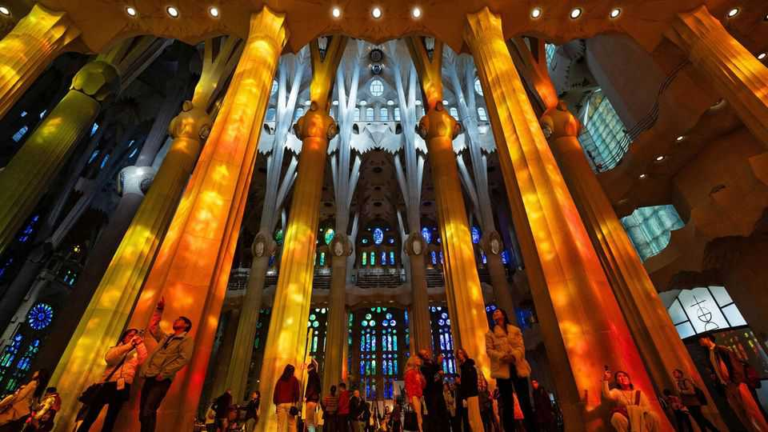
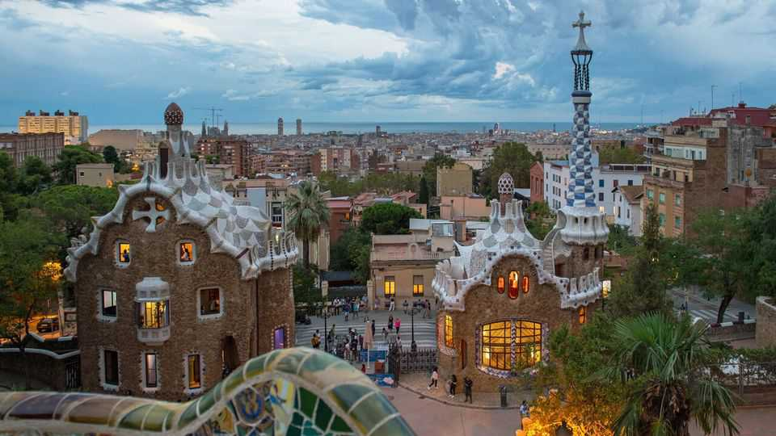

Saint or sinner: Antoni Gaudí’s polarising style
A hundred years after his death, the Spanish architect is both loved and reviled
June 11th 2026

With its cluster of 18 honeycombed, tapering towers, the basilica of the Sagrada Família (Holy Family) dominates Barcelona’s skyline. For some, it is a work of genius, a modern reincarnation of the great medieval cathedrals of Europe. For others it is a gigantic folly. But no one can doubt that it has become a global icon. Last year it attracted almost 5m people, making it one of the most visited churches in the world, alongside St Peter’s Basilica in the Vatican and Notre Dame in Paris.
After almost 150 years of construction, in February builders finished installing a white 17-metre-high ceramic cross on top of the central tower. With that, it became the tallest church in the world, overtaking Ulm Minster in Germany. Finishing a remaining façade may take another ten years. But on June 10th Pope Leo XIV celebrated a mass at the basilica to bless its near-completion and to mark the centenary of the death of Antoni Gaudí, the architect who created it.

To the outside world, Gaudí has become almost synonymous with Barcelona. As well as the Sagrada Família, his output included six mansions and Parc Güell, which overlooks the city. Most were built for the Catalan bourgeoisie as they grew rich from industrialisation in the late 19th century. His clients liked, or at least tolerated, the architect’s boundless decorative imagination and eclecticism.
Gaudí was both reactionary and revolutionary. He was born to a family of coppersmiths in the lowlands of Catalonia. His rural childhood and the family vocation gave him both an organic decorative template and a liking for manual work. Gaudí observed that there were “neither 90-degree angles nor straight lines in nature”, writes Peter Stanford, a journalist, in a new biography, “God’s Architect”. He preferred curves in his buildings, as well as representations of plants and animals. His tomb, in the crypt of the Sagrada Família, describes him as “an extraordinary craftsman”. He was also a self-taught engineer. The director of Barcelona’s architecture school mused that he would “either be a madman or a genius”. He was both.
His buildings were highly original and technically innovative. The exterior of the Batlló mansion on Paseig de Gràcia, Barcelona’s grandest thoroughfare, features windows like eye sockets, framed by bones carved in stone. A roof for Gaudí was a creative field, with chimneys like helmeted sentinels. His favourite forms included hyperbolic paraboloids (a saddle shape) and helicoids (spirals).

At the Sagrada Família, he rejected external buttresses and supporting columns in the nave. To spread the weight of the roof, he designed walls to resemble trees and used hanging chains of stone, notes Mauricio Cortés, one of the team of architects still working on the building today. He persuaded local people to pose as models for the biblical figures on the façade.
Gaudí’s deepest influences were Catholicism and Catalan nationalism. He looked back to Catalan Gothic, a particularly elegant variant of the medieval style, though he also incorporated Baroque, Orientalist and Moorish flourishes. He saw his work as an expression of his faith. In the 1890s, as the church waged a culture war against anticlerical anarchism, Gaudí joined an artistic group whose mentor was an arch-reactionary bishop. He gave up commercial work to dedicate the last 12 years of his life to the Sagrada Família.

In 1926, on his regular evening stroll to see his confessor, he was hit by a tram. Taken for a tramp, he was moved to a hospital for the poor, where he died three days later. Some 10,000 people attended his funeral. But for decades the Sagrada Família was little loved. In 1936, at the start of the Spanish civil war, an anarchist militia smashed the elaborate models that Gaudí had left and looted his archive of drawings. George Orwell, who was in Barcelona during the civil war, called the Sagrada Família “one of the most hideous buildings in the world”, adding that “the anarchists showed bad taste in not blowing it up when they had the chance.”
Several things would save it. The Surrealists championed Gaudí’s legacy—though he had rejected the idea that his work was based on dreams. The drug-soaked counterculture of the 1960s saw in him the architect of an acid trip. Japanese tourists saw pantheism. In the 1980s the money at last started pouring in, and construction speeded up (it is financed almost entirely from entrance fees paid by tourists).
Because of his technical prowess, Gaudí is also an architect’s architect. He was admired by Le Corbusier for his mastery of structure and stone. Unlike the works of some recent starchitects, his buildings have not suffered structural weakness, notes Mr Stanford. His influence can be seen in Frank Gehry and Zaha Hadid.
Yet Gaudí’s aesthetic remains divisive. Many who study his church and homes think his style is pure kitsch—though it is hardly his fault if Disneyland copied him. For others he remains refreshingly iconoclastic. He had a sublime sense of colour. Walk into the Sagrada Família, and you will be soothed by the gentle light reflected through the coloured glass windows, just as in a medieval cathedral. Last year Pope Francis declared Gaudí “venerable” and put him on the path to sainthood. Listen carefully in the nave, and you can almost hear Orwell’s groan. ■
For more on the latest books, films, TV shows, albums and controversies, sign up to Plot Twist, our weekly subscriber-only newsletter